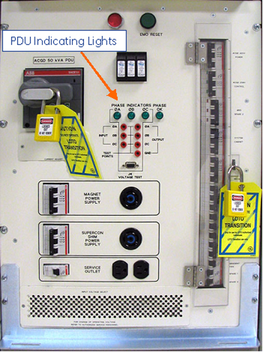
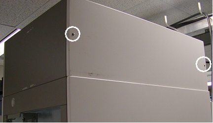
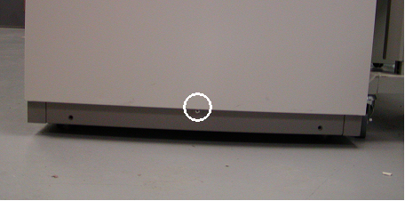
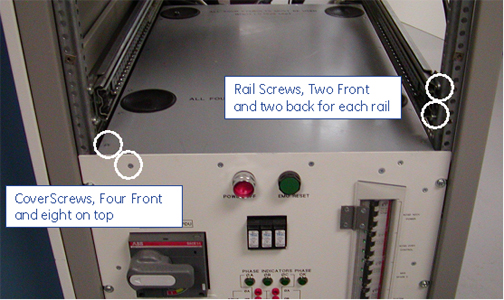
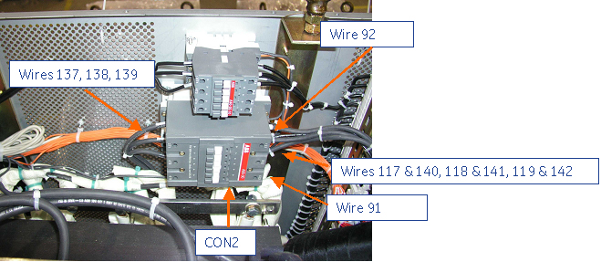
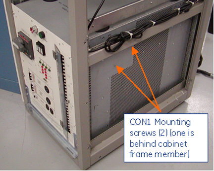
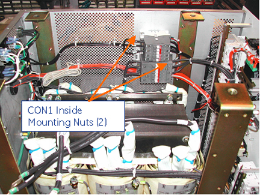

Operating Documentation
Direction 5440000, Rev# 5
Signa HDxt Service Methods
Module Version 2.0, Version Date 11/8/07
Operating Documentation |
| Required Persons | Preliminary Reqs | Procedure | Finalization |
|---|---|---|---|
| 1 | Not Applicable | 90 mins | Not Applicable |
This procedure describes the steps necessary to replace either of the two Teal PDU contactors. The procedure is similar for each contactor and will show the uniqueness for each contactor in the procedure.
| Item | Qty | Effectivity | Part# | Manufacturer | |
|---|---|---|---|---|---|
| Small Tool Set | 1 | - | 5113258 | ||
| 11/32 Open Box Wrench | 1 | - | - | ||
| Right Angle Phillips Screwdriver (optional) | 1 | - | - | - | |
| Item | Qty | Effectivity | Part# | Manufacturer | |
|---|---|---|---|---|---|
| CON1 (40A Contactor) | 1 | - | 5113474-3 | - | |
| CON2 (95A Contactor) | 1 | - | 5113474-4 | - | |
| ||||
| fATAL ELECTRIC SHOCK HAZARD !! | ||||
| THE GRADIENT/ PDU CABINET CONTAINS HIGH VOLTAGE. EVEN WHEN AN EMERGENCY POWER OFF SWITCH IS ACTIVATED, IT DOES NOT GUARANTEE THAT POWER HAS BEEN REMOVED FROM COMING INTO THE UNIT. | ||||
| TURN POWER OFF BEFORE SERVICING. |
| ||||
| fatal electric shock hazard !! | ||||
| failure to lock out power could result in serious injury or death. | ||||
| TO PREVENT FATAL ELECTRIC SHOCK, DISCONNECT POWER FROM THE PDU BEFORE YOU PERFORM THE FOLLOWING PROCEDURES. PERFORM LOCKOUT / TAGOUT PROCEDURE PER GE OSHA LOCKOUT / TAGOUT REQUIREMENTS LISTED IN THE FIELD SERVICE EHS MANUAL & TRAINING 2000 P/N 2135387-200. |
Perform PDU Lock Out Tag Out (LOTO) PDU LOTO
Verify the power has been removed from PDU before proceeding. The green power-on indicators on the front of the PDU should be off, with the PDU main breaker in both the on and off positions.
Illustration 1: PDU Indicating Light

Access to both the top and right side of the PDU is required for Contactor replacement. It may be necessary to relocate the cabinet to gain access space. If this is not possible, you will need to replace the entire cabinet with the cabinet FRU.
Install the cabinet anti-tip legs and remove the power supply module just above the PDU.
Remove the cooling fan right side panel by removing 2 screws using a #2 Phillips screwdriver. See Illustration 2.
Illustration 2: Cooling Fan Right Side Panel

Remove the cabinet right side panel by removing screw at the bottom of the panel. Lift the side panel straight up to remove. See Illustration 3.
Illustration 3: Cabinet Right Side Panel

Mark where the Power Supply rails are attached using a pencil or permanent marker. Remove 4 screws per rail using #3 Phillips screwdriver. See Illustration 4
Illustration 4: PDU Top and Power Supply Rails

Remove the PDU top cover, by removing 12 screws from the top cover using the #2 Phillips screwdriver, for access to CON1 or CON2. Save hardware removed. Be careful not to strip the screws
Place a piece of paper or plastic over the transformer coils to prevent loose hardware from falling in.
Using a #2 Phillips screwdriver, remove all the wires connected to the defective contactor. See column 1 andIllustration 5 for Contactor 1, and see column 2 andIllustration 6 for Contactor 2.
| Contactor 1 (CON1) | Contactor 2 (CON2) |
| Wires 90 and 92 -- CON1 A1 | Wire 92 -- CON2 A1 |
| Wires 91 and 93 -- CON1 A2 | Wire 91 -- CON2 A2 |
| Wires 95, 96 and 97 -- CON1 L1, L2, and L3 respectively. | Wires 117 & 140, 118 & 141, 119 & 142-- CON2 L1, L2 and L3 respectively. |
| Wires 98, 99, and 100 -- CON1 T1, T2, and T3 respectively. | Wires 137, 138 and 139 -- CON2 T1, T2 and T3 respectively. |
Illustration 5: Contactor 1 Wiring

Illustration 6: Contactor 2 Wiring

Remove the defective contactor from the PDU by removing nuts on contactor base using an adjustable wrench or needle nose pliers. The nut size is 11/32” if a different tool is chosen. Hold the screw head behind the cabinet frame member with your fingers or a small right angle Phillips head screwdriver (if available) until the nut is loose enough to spin off with your fingers. Save the hardware, as you will be using it for mounting the new contactor. Be careful not to drop the hardware. If you do, recovery may be possible using a small magnet. SeeIllustration 7 andIllustration 8 .
Illustration 7: Contactor 1 Screw locations (similar for Contactor 2)

Illustration 8: Contactor 1 Nut locations

Install the new contactor from the kit by mounting the contactor using the hardware removed in Step 4.1.11. Torque mounting screw with nut to 16 inch-lbs or 1/2 turn past hand tight.
Connect all the wires taken off from the defective contactor to the new contactor. See the connection table below and referenceIllustration 5 or Illustration 6. Torque all wire connection to 9 inch-lbs or until the wires are snug and can’t be pulled out.
| Contactor 1 (CON1) | Contactor 2 (CON2) |
| Wires 90 and 92 -- CON1 A1 | Wire 92 -- CON2 A1 |
| Wires 91 and 93 -- CON1 A2 | Wire 91 -- CON2 A2 |
| Wires 95, 96 and 97 -- CON1 L1, L2, and L3 respectively. | Wires 117 & 140, 118 & 141, 119 & 142-- CON2 L1, L2 and L3 respectively. |
| Wires 98, 99, and 100 -- CON1 T1, T2, and T3 respectively. | Wires 137, 138 and 139 -- CON2 T1, T2 and T3 respectively. |
Remove anything used to prevent hardware from falling into the PDU transformer.
Replace the top cover using the 12 screws removed from Step 4.1.8
Re-install rails for Gradient Power Supply.
Re-install the Gradient Power Supply above the PDU.
Replace cabinet right side panel and then the cooling fan panel.
Observe proper LOTO process and reapply power to the PDU.
Test the PDU for proper operation by reapplying power and pressing the EMO reset button. The contactor energizing should be heard.
No finalization steps.